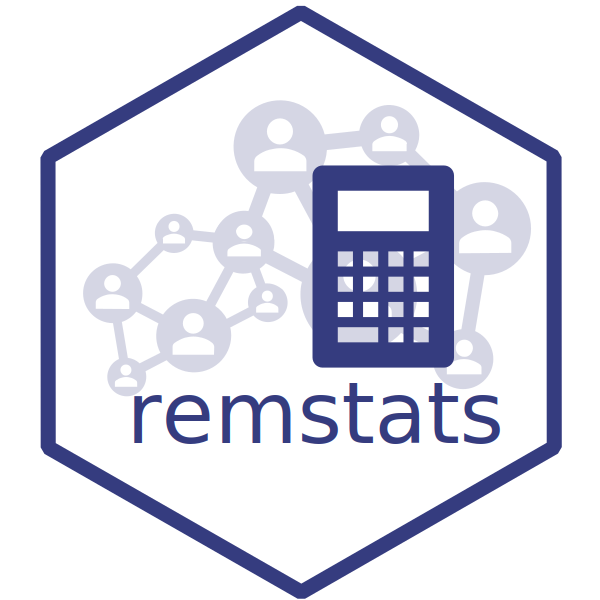

remstats
Computes Statistics for Relational Event History Data
The remstats package is designed to compute a variety of statistics for relational event models. Relational event modeling approaches enable researchers to investigate both exogenous and endogenous factors influencing the evolution of a time-ordered sequence of relational events. These models are categorized into tie-oriented models, where the probability of a dyad interacting next is modeled in a single step (e.g., see Butts, 2008), and actor-oriented models, which first model the probability of a sender initiating an interaction and subsequently the probability of the senders’ choice of receiver (e.g., see Stadtfeld & Block, 2017). The remstats package is designed to compute a variety of statistics that characterize exogenous and endogenous influences on the event stream for both types of models.
The package is part of a bundle of R-packages developed by researchers from Tilburg University intended to aid applied researchers in the application of relational event modeling. For preparing the relational event history, remstats assumes the prior application of remify::remify() (available on CRAN or on Github). Model estimation can subsequently be executed using remstimate (available on CRAN or on GitHub).
Installation
To install the package in R from CRAN, use:
install.packages("remstats")
library(remstats)Workflow example
# Load example data
data(history)
data(info)
# Define effects
effects <- ~ 1 + send("extraversion", info) + inertia()
# Prepare event history with the 'remify package'
# Install with install.packages("remify")
rehObject <- remify::remify(edgelist = history, model = "tie")
# Compute statistics
statsObject <- remstats(reh = rehObject, tie_effects = effects)
# Estimate model parameters with the 'remstimate' package
# Install with install.packages("remstimate")
fit <- remstimate::remstimate(reh = rehObject, stats = statsObject,
method = "MLE", timing = "interval")Support
# To view all vignettes in the remstats package
vignette(package = "remstats")
#To view all help files in the remstats package
help(package="remstats")
#To view available effects for the tie-oriented model
help("all_tie_effects")
#To view available effects for the actor-oriented model
help("all_actor_effects")Problems while using remstats?
Should you encounter errors while using the package, should you have questions that are not answered in the Vignettes, or for reporting any kind of malfunction of the package, you can open an issue here.
When opening an issue, please, use a descriptive title that clearly states the issue, be as thorough as possible when describing the issue, provide code snippets that can reproduce the issue.